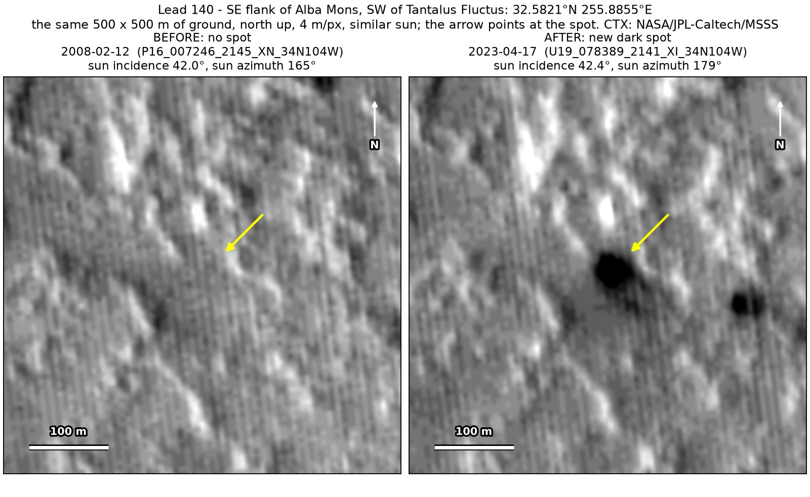
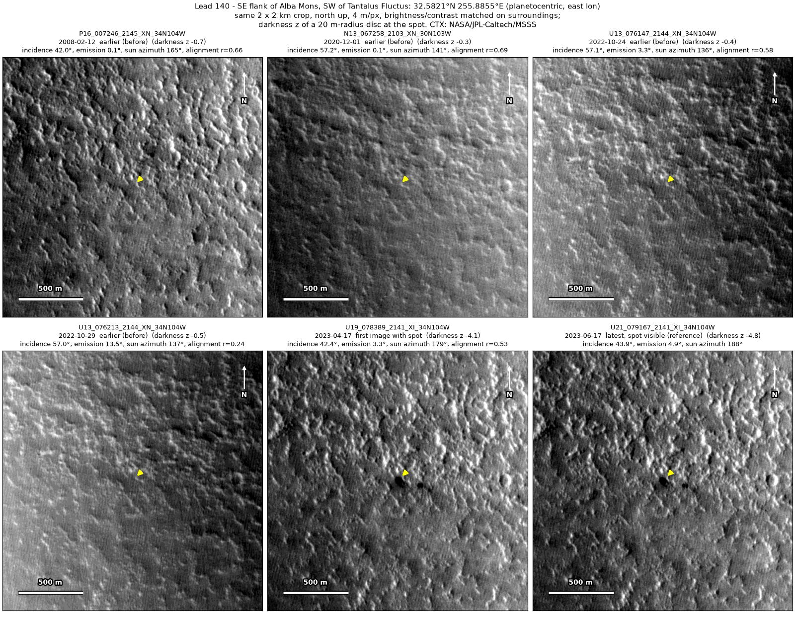
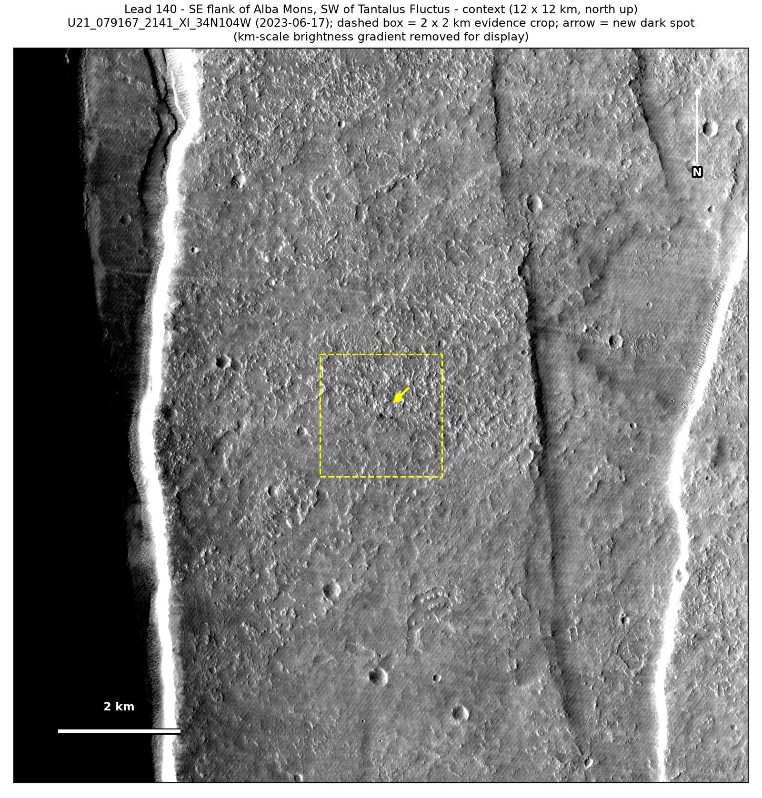

Professor of Mathematics
Paata Ivanisvili
Department of Mathematics, University of California, Irvine

← Possible new impact sites on Mars
Candidate 140: South-east flank of Alba Mons, south-west of Tantalus Fluctus
Strong · roughly 90%

What changed. A compact dark spot about 45 m across, with a smaller dark spot 175 m to its east-south-east, appeared on rough plains on the south-east flank of Alba Mons between October 2022 and April 2023, and was still there in June 2023. Two CTX images from separate orbits show it.
Why it may be a new impact. Four earlier images from 2008 to 2022 show plain ground there, one of them under almost the same sun as the April 2023 image. A dark mark 291 m away shows in the 2008 image, so that image would have shown new spots too, and the change between the aligned before and after images is greatest at the two spots. A compact pair of new dark spots is the usual look of a small impactor that broke up in the air.
- Location
- 32.582° N, 255.885° E (104.115° W)
- Absent
- 12 February 2008, 1 December 2020, 24 October 2022 and 29 October 2022
- Present
- 17 April 2023 and 17 June 2023
- Size
- Compact dark spot about 45 m across (46 × 50 m in the June 2023 image), plus a new companion spot of 42 × 26 m, 175 m to the east-south-east
- Confidence
- Strong candidate: roughly 90% likely to be a new impact.
- Caveat
- The three earlier images closest in time have a lower sun, under which the dark marks nearby look fainter, so it is less certain that those images would have shown the spots. The only later image, from March 2024, is too poorly aligned and too low in contrast to show whether the spots were still there. No image from the high-resolution HiRISE camera covers it; the nearest ends 23.2 km away. Like every candidate here, it is unconfirmed: see the caveat.

